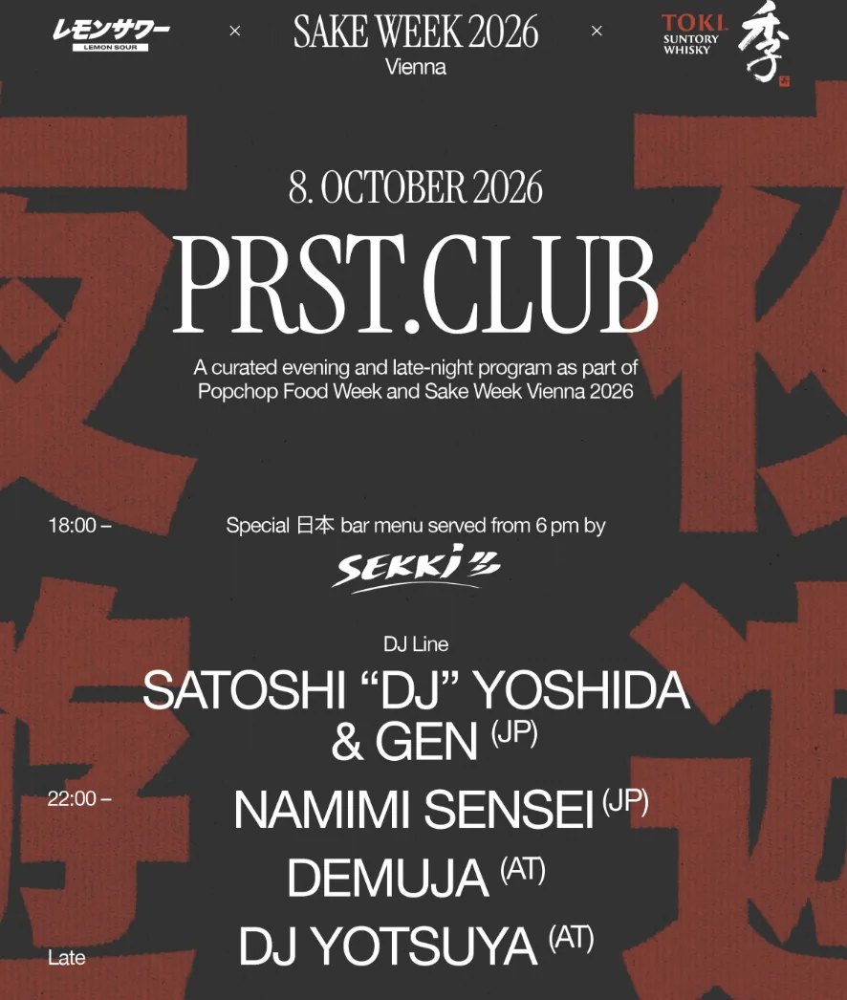

VIENNAOct 12, 2026
While He Was Playing
At PRST in Vienna, someone took Demuja’s USB out of the CDJ mid-set. The room went quiet. The unreleased music left with the crowd.
The song stopped because someone took the thing that was playing it.
On Thursday 8 October, Bernhard Weiss, the Salzburg-born producer who works as Demuja, was mid-set at PRST, Praterstraße 18, when a hand pulled his USB out of the CDJ. For a while, it went quiet. Satoshi “DJ” Yoshida and Gen had the vinyl from 18:00, Namimi Sensei followed, Demuja was on from 22:00, and DJ Yotsuya came after. Entry was free until 10, inside Popchop Food Week and Sake Week. PRST is a former television station, the dancefloor set in the old recording studio so the neighbours never have to learn the kick. He had been billed at that address in 2023, and again in 2024.
What left was a collection he says took years, and the money those years cost, plus music he had not put out. Whoever took it had been in the crowd, close enough to reach the player. Spare sticks ride in the gig bag. A backup sits at home. He priced the plastic at fifty euros and set that aside. He hoped karma would find the person. What bothered him was the behaviour. He wrote that he was staying with the 99 percent who understand a club runs on people who leave the thing making the night where it is.
Honey Dijon called the loss traumatic, and called the collection an extension of the person who built it. Patrick Pulsinger, Radio Slave, Move D, Iris Menza, Chloé Caillet and And Hazel were in the comments. And Hazel wrote that it was disappointing to find people in the scene with so little respect for the work. A library compiled in public, removed in one reach.
Twelve days earlier, on GROOVE Podcast 519, he recorded a mix on two XDJ-700s and an old DJM-250, “the same gear I have had for 15 years now.” He wanted the dubbier music he is making, lifted enough for a night, and he tries not to overthink it. “Not prepare too much and just go with the flow, see where it takes me.” Four of the twelve tracks are his, titled Unreleased. On 9 September he put out Demuja presents Dubmuja, fifteen tracks, dub as the brief. The hard drive at home holds about 400 finished tracks, many of them on that Bandcamp, beside Permanent Vacation, Chiwax, Peach Discs and MUJA, the imprint he started in 2017. He has not published a count for the stick. Unreleased music was on it. The copy at home does not settle the taking.
Other sticks have left other nights. The difference is where this one was. On 20 June 2025 DJ Hell’s bag went at dinner in Milan: passport, cards, cash, keys, and a USB of music and what he called important data. The gig at Vacuum was cancelled. “This is a personal and artistic loss.” That stick never reached a player. Earlier that June the Menendez Brothers had a bag taken at fabric minutes into the set, years of music and unreleased tracks inside, and the song kept going. On 10 October 2025 Loco Dice lost a hard drive and a loaded USB from his tour manager’s bag in the booth at Fabrique in Milan. “The stolen hard drive contains my entire music collection.” Annie Mac once lost a stick and got it back with a handwritten note. Dice’s note was a request. Demuja’s was in the CDJ, under the song. When that one goes, the bar stops, and everyone dancing hears it.
Fifty euros buys another stick. The spare is in the bag and the backup is at home, and neither has anything to say about Thursday. A person who wanted the plastic had a bad night’s work. A person who wanted the unreleased left with it.
Stand next to a CDJ in a small Vancouver room, or a basement in Victoria, and the port is part of the floor. A room built inside a room will keep a kick off Praterstraße. It will not keep a hand off a player. He asked to be counted with the 99 percent. The room has that majority. It is also missing the stick.
Sources
- Resident Advisor event listing, PRST x POPCHOP FOOD WEEK x SAKE WEEK 2026, Thursday 8 October, Praterstraße 18: https://ra.co/events/2546088
- FAZEmag, "USB-Stick während Gig gestohlen: Demuja verliert tausende Tracks und unveröffentlichte Releases" (Michael Scharsig, Oct 10, 2026): https://www.fazemag.de/usb-stick-waehrend-gig-gestohlen-demuja-verliert-tausende-tracks-und-unveroeffentlichte-releases/
- Loop Rituals, "USB-Stick aus der Booth geklaut: Auch unveröffentlichte Musik von Demuja ist betroffen" (Christoph Gleich, Oct 12, 2026): https://looprituals.de/demuja-usb-stick-aus-der-booth-geklaut/
- Resident Advisor, "Demuja's USB containing unreleased music stolen mid-set" (Michael Lawson, Oct 12, 2026): https://ra.co/news/86177
- GROOVE, "GROOVE Podcast 519 – Demuja" (Christoph Gleich, Sep 30, 2026): https://groove.de/2026/09/30/groove-podcast-519-demuja/
- Demuja on Bandcamp, Demuja presents Dubmuja (Sep 9, 2026): https://demuja.bandcamp.com/album/demuja-presents-dubmuja
- Austrian Music Export, "I hope that society will change its views after this issue" (Christoph Benkeser, Apr 28, 2020): https://www.musicexport.at/i-hope-that-society-will-change-its-views-after-this-issue-demuja/
- Wien.info, PRST Praterstrasse, Praterstraße 18, 1020 Wien: https://www.wien.info/de/essen-trinken/bars-clubs/clubs-discos/praterstrasse-421558
- ntry.at, PRST invites DEMUJA (Mar 24, 2023): https://ntry.at/240323
- Volume, Demuja invites Ryan Elliott at Praterstrasse (May 8, 2024): https://www.volume.at/events/demuja-invites-ryan-elliott-2024-05-08/
- Mixmag, "DJ Hell cancels show after USB containing 'unreleased music' stolen in Milan" (Gemma Ross, Jun 23, 2025): https://mixmag.net/read/dj-hell-cancels-show-after-usb-containing-unreleased-music-stolen-in-milan-news
- DJ Mag, "Loco Dice's USB and hard drive containing his 'entire music collection' stolen" (James Keith, Oct 16, 2025): https://djmag.com/news/loco-dices-usb-and-hard-drive-containing-his-entire-music-collection-stolen
- MusicBrainz, Demuja (Bernhard Weiss): https://musicbrainz.org/artist/6898219e-41d2-4c5e-9aeb-a9e1463ccd10